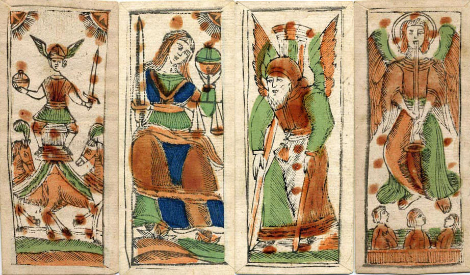

¿Qué es el tarot?
Es un mapa simbólico de nuestras experiencias de vida, el cual nos permite conocernos mejor tanto a nivel emocional, mental y espiritual. Se compone de 78 cartas llamadas “arcanos”, divididas en dos subgrupos: 22 mayores y 56 menores; cada una de ellas con un significado específico que hace referencia a una emoción, vivencia, arquetipo o enseñanza universal. Existen distintos tipos de mazosque se fueron creando y reversionando a lo largo de los años.
El origen del tarot
El origen del tarot es misterioso y envuelto en varias teorías. Se cree que el tarot tiene sus raíces en Europa, aunque algunas teorías sugieren influencias de culturas antiguas como la egipcia, la india o la china. Sin embargo, la mayoría de los expertos coinciden en que el tarot tal como lo conocemos hoy comenzó a tomar forma en Italia en el siglo XV, durante el Renacimiento.
Las primeras cartas de tarot conocidas eran parte de un juego de cartas llamado "tarocchi", que se jugaba en la corte italiana. Estas cartas no tenían inicialmente un uso esotérico ni espiritual; eran simplemente un juego de entretenimiento. Sin embargo, en el siglo XVIII, el tarot comenzó a asociarse con el ocultismo y la adivinación, principalmente debido a la influencia de movimientos esotéricos como la cábala, el hermetismo y la alquimia, que comenzaron a vincular los símbolos de las cartas con enseñanzas místicas y espirituales. Aunque hasta el día de hoy existen distintas interpretaciones del Tarot
